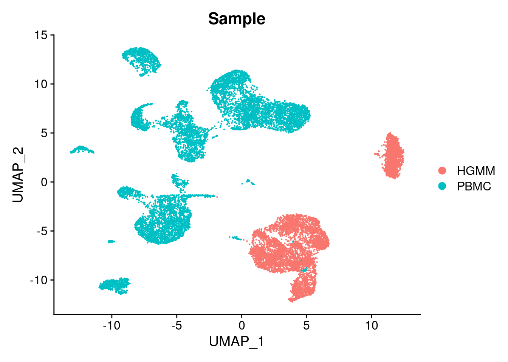
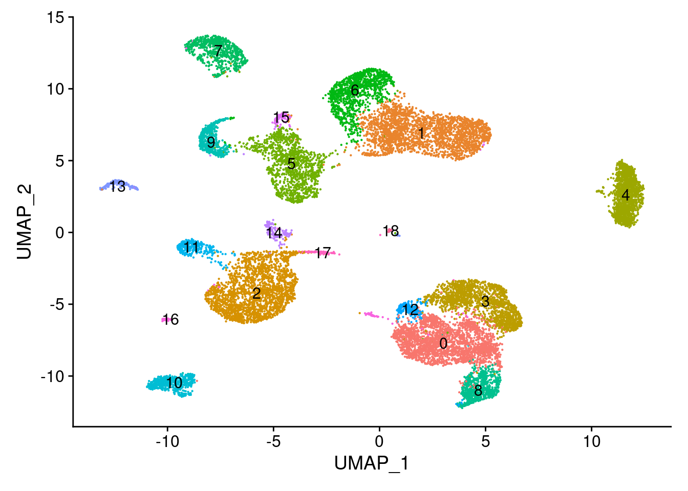
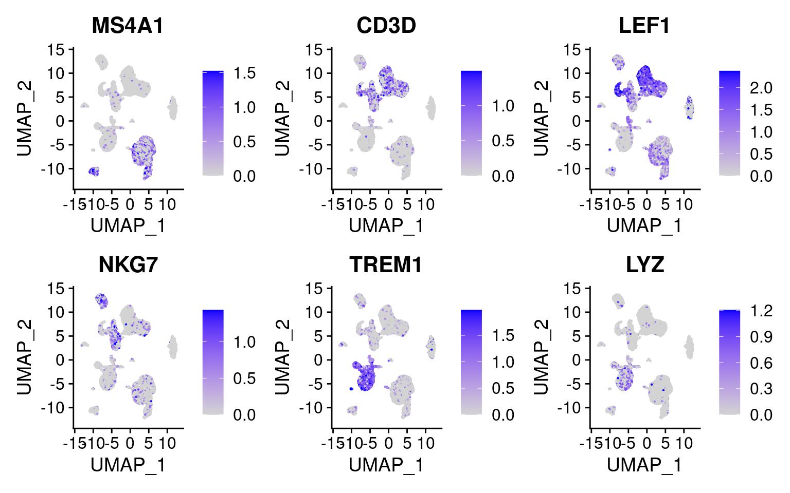

Last updated: 2022-09-14
Checks: 7 0
Knit directory: chromap_vs_cellranger_scATAC_exploration_10x/
This reproducible R Markdown analysis was created with workflowr (version 1.7.0). The Checks tab describes the reproducibility checks that were applied when the results were created. The Past versions tab lists the development history.
Great! Since the R Markdown file has been committed to the Git repository, you know the exact version of the code that produced these results.
Great job! The global environment was empty. Objects defined in the global environment can affect the analysis in your R Markdown file in unknown ways. For reproduciblity it’s best to always run the code in an empty environment.
The command set.seed(20220912) was run prior to running the code in the R Markdown file. Setting a seed ensures that any results that rely on randomness, e.g. subsampling or permutations, are reproducible.
Great job! Recording the operating system, R version, and package versions is critical for reproducibility.
Nice! There were no cached chunks for this analysis, so you can be confident that you successfully produced the results during this run.
Great job! Using relative paths to the files within your workflowr project makes it easier to run your code on other machines.
Great! You are using Git for version control. Tracking code development and connecting the code version to the results is critical for reproducibility.
The results in this page were generated with repository version 10fdcb0. See the Past versions tab to see a history of the changes made to the R Markdown and HTML files.
Note that you need to be careful to ensure that all relevant files for the analysis have been committed to Git prior to generating the results (you can use wflow_publish or wflow_git_commit). workflowr only checks the R Markdown file, but you know if there are other scripts or data files that it depends on. Below is the status of the Git repository when the results were generated:
working directory clean
Note that any generated files, e.g. HTML, png, CSS, etc., are not included in this status report because it is ok for generated content to have uncommitted changes.
These are the previous versions of the repository in which changes were made to the R Markdown (analysis/CellrangerSignacIntegration.Rmd) and HTML (docs/CellrangerSignacIntegration.html) files. If you’ve configured a remote Git repository (see ?wflow_git_remote), click on the hyperlinks in the table below to view the files as they were in that past version.
| File | Version | Author | Date | Message |
|---|---|---|---|---|
| Rmd | 10fdcb0 | jeremymsimon | 2022-09-14 | Initial commit |
library(tidyverse)── Attaching packages ─────────────────────────────────────── tidyverse 1.3.1 ──✔ ggplot2 3.3.6 ✔ purrr 0.3.4
✔ tibble 3.1.8 ✔ dplyr 1.0.9
✔ tidyr 1.2.0 ✔ stringr 1.4.0
✔ readr 2.1.2 ✔ forcats 0.5.1── Conflicts ────────────────────────────────────────── tidyverse_conflicts() ──
✖ dplyr::filter() masks stats::filter()
✖ dplyr::lag() masks stats::lag()library(GenomicRanges)Loading required package: stats4Loading required package: BiocGenerics
Attaching package: 'BiocGenerics'The following objects are masked from 'package:dplyr':
combine, intersect, setdiff, unionThe following objects are masked from 'package:stats':
IQR, mad, sd, var, xtabsThe following objects are masked from 'package:base':
anyDuplicated, append, as.data.frame, basename, cbind, colnames,
dirname, do.call, duplicated, eval, evalq, Filter, Find, get, grep,
grepl, intersect, is.unsorted, lapply, Map, mapply, match, mget,
order, paste, pmax, pmax.int, pmin, pmin.int, Position, rank,
rbind, Reduce, rownames, sapply, setdiff, sort, table, tapply,
union, unique, unsplit, which.max, which.minLoading required package: S4Vectors
Attaching package: 'S4Vectors'The following objects are masked from 'package:dplyr':
first, renameThe following object is masked from 'package:tidyr':
expandThe following objects are masked from 'package:base':
expand.grid, I, unnameLoading required package: IRanges
Attaching package: 'IRanges'The following objects are masked from 'package:dplyr':
collapse, desc, sliceThe following object is masked from 'package:purrr':
reduceLoading required package: GenomeInfoDblibrary(Seurat)Attaching SeuratObjectlibrary(Signac)
library(EnsDb.Hsapiens.v86)Loading required package: ensembldbLoading required package: GenomicFeaturesLoading required package: AnnotationDbiLoading required package: BiobaseWelcome to Bioconductor
Vignettes contain introductory material; view with
'browseVignettes()'. To cite Bioconductor, see
'citation("Biobase")', and for packages 'citation("pkgname")'.
Attaching package: 'AnnotationDbi'The following object is masked from 'package:dplyr':
selectLoading required package: AnnotationFilter
Attaching package: 'ensembldb'The following object is masked from 'package:dplyr':
filterThe following object is masked from 'package:stats':
filterload("Cellranger_HGMM_PBMC_seurat_090222_QC.RData")This in my opinion is the source of a major shortcoming of cellranger, and results in a lot of redundant/circular logic and processing. If the question of “what constitutes a cell?” depends on how much signal and enrichment we get over genomic features, then cellranger has already decided which minimally-viable cells to retain before we’ve even quantified the signal over the final set of features. In other words, the accepted workflow calls peaks on each sample, quantifies and filters out some cells based on those peaks, and is completely unaware of information from other cells/samples/replicates/conditions run separately. We therefore need to do most of this all over again here; we define a union set and run FeatureMatrix to re-do all of our feature counts per cell.
In my opinion, it would be far better to identify all peaks based on all samples and experimental conditions, quantify the number of fragments for each cell barcode under those features once, then filter for QC and proceed with the analysis.
Both approaches share the additional limitation that some regulatory elements may only be present or utilized in a small fraction of cells, or otherwise are cell-type- or condition-specific. Calling peaks essentially in a pseudo-bulk fashion like this may lack the power to detect sites that aren’t largely ubiquitous. This is an area I believe we in the field can and should improve upon.
peaks.HGMM <- read.table(
file = "10x_HGMM_cellranger/outs/peaks.bed",
col.names = c("chr", "start", "end")
)
peaks.PBMC <- read.table(
file = "10x_PBMC_cellranger/outs/peaks.bed",
col.names = c("chr", "start", "end")
)gr.HGMM <- makeGRangesFromDataFrame(peaks.HGMM)
gr.PBMC <- makeGRangesFromDataFrame(peaks.PBMC)p <- as.data.frame(read.table("cCRE_hg38.bed",header=F,sep="\t"))
colnames(p) <- c("chr","start","stop")
cre <- makeGRangesFromDataFrame(p)gr.HGMM <- keepStandardChromosomes(gr.HGMM,pruning.mode="coarse")
gr.PBMC <- keepStandardChromosomes(gr.PBMC,pruning.mode="coarse")
gr.cre <- keepStandardChromosomes(cre,pruning.mode="coarse")combined.peaks <- reduce(x = c(gr.HGMM, gr.PBMC, gr.cre))
# Filter out bad peaks based on length
peakwidths <- width(combined.peaks)
combined.peaks <- combined.peaks[peakwidths < 10000 & peakwidths > 20]HGMM.counts <- FeatureMatrix(
fragments = Fragments(HGMM_cr_seurat),
features = combined.peaks,
cells = colnames(HGMM_cr_seurat)
)Extracting reads overlapping genomic regionsPBMC.counts <- FeatureMatrix(
fragments = Fragments(PBMC_cr_seurat),
features = combined.peaks,
cells = colnames(PBMC_cr_seurat)
)Extracting reads overlapping genomic regionsHGMM_assay <- CreateChromatinAssay(HGMM.counts, fragments = Fragments(HGMM_cr_seurat))
HGMM_seurat <- CreateSeuratObject(HGMM_assay, assay = "ATAC", meta.data=as.data.frame(HGMM_cr_seurat@meta.data))Warning: Keys should be one or more alphanumeric characters followed by an
underscore, setting key from atac to atac_HGMM_seurat$Sample <- "HGMM"
PBMC_assay <- CreateChromatinAssay(PBMC.counts, fragments = Fragments(PBMC_cr_seurat))
PBMC_seurat <- CreateSeuratObject(PBMC_assay, assay = "ATAC", meta.data=as.data.frame(PBMC_cr_seurat@meta.data))Warning: Keys should be one or more alphanumeric characters followed by an
underscore, setting key from atac to atac_PBMC_seurat$Sample <- "PBMC"cr.combined <- merge(HGMM_seurat, y = PBMC_seurat)filtFeatures <- FindTopFeatures(cr.combined,min.cutoff=20)
cr.combined <- subset(cr.combined, features = VariableFeatures(filtFeatures))cr.list <- SplitObject(cr.combined, split.by="Sample")for (i in 1:length(cr.list)) {
cr.list[[i]] <- subset(x = cr.list[[i]],
features = VariableFeatures(filtFeatures),
subset = nCount_ATAC > 1000 &
nCount_ATAC < 100000 &
FRiP > 0.15 &
blacklist_fraction < 0.05 &
nucleosome_signal < 4 &
TSS.enrichment > 2
)
cr.list[[i]] <- FindTopFeatures(cr.list[[i]], min.cutoff = 'q0')
cr.list[[i]] <- RunTFIDF(cr.list[[i]], assay="ATAC")
cr.list[[i]] <- RunSVD(cr.list[[i]])
cr.list[[i]] <- RunUMAP(cr.list[[i]], reduction = "lsi", dims = 2:30)
}Performing TF-IDF normalizationWarning in RunTFIDF.default(object = GetAssayData(object = object, slot =
"counts"), : Some features contain 0 total countsRunning SVDScaling cell embeddingsWarning: The default method for RunUMAP has changed from calling Python UMAP via reticulate to the R-native UWOT using the cosine metric
To use Python UMAP via reticulate, set umap.method to 'umap-learn' and metric to 'correlation'
This message will be shown once per session05:56:36 UMAP embedding parameters a = 0.9922 b = 1.11205:56:36 Read 6639 rows and found 29 numeric columns05:56:36 Using Annoy for neighbor search, n_neighbors = 3005:56:36 Building Annoy index with metric = cosine, n_trees = 500% 10 20 30 40 50 60 70 80 90 100%[----|----|----|----|----|----|----|----|----|----|**************************************************|
05:56:38 Writing NN index file to temp file /tmp/RtmpwGLNhI/file3b98f1355a0f1f
05:56:38 Searching Annoy index using 1 thread, search_k = 3000
05:56:41 Annoy recall = 100%
05:56:46 Commencing smooth kNN distance calibration using 1 thread
05:56:52 Initializing from normalized Laplacian + noise
05:56:53 Commencing optimization for 500 epochs, with 272968 positive edges
05:57:08 Optimization finished
Performing TF-IDF normalizationWarning in RunTFIDF.default(object = GetAssayData(object = object, slot =
"counts"), : Some features contain 0 total countsRunning SVD
Scaling cell embeddings
06:05:15 UMAP embedding parameters a = 0.9922 b = 1.112
06:05:15 Read 9939 rows and found 29 numeric columns
06:05:15 Using Annoy for neighbor search, n_neighbors = 30
06:05:15 Building Annoy index with metric = cosine, n_trees = 50
0% 10 20 30 40 50 60 70 80 90 100%
[----|----|----|----|----|----|----|----|----|----|
**************************************************|
06:05:17 Writing NN index file to temp file /tmp/RtmpwGLNhI/file3b98f1f8a05eb
06:05:17 Searching Annoy index using 1 thread, search_k = 3000
06:05:22 Annoy recall = 100%
06:05:26 Commencing smooth kNN distance calibration using 1 thread
06:05:31 Initializing from normalized Laplacian + noise
06:05:32 Commencing optimization for 500 epochs, with 405586 positive edges
06:05:49 Optimization finishedcr.combined <- subset(
x = cr.combined,
features = VariableFeatures(filtFeatures),
subset = nCount_ATAC > 1000 &
nCount_ATAC < 100000 &
FRiP > 0.15 &
blacklist_fraction < 0.05 &
nucleosome_signal < 4 &
TSS.enrichment > 2
)table(cr.combined$Sample)
HGMM PBMC
6639 9939 lapply(cr.list, dim)$HGMM
[1] 744102 6639
$PBMC
[1] 744102 9939cr.combined <- FindTopFeatures(cr.combined, min.cutoff = 'q0')
cr.combined <- RunTFIDF(cr.combined, assay="ATAC")Performing TF-IDF normalizationcr.combined <- RunSVD(cr.combined)Running SVDScaling cell embeddingscr.combined <- RunUMAP(cr.combined, reduction = "lsi", dims = 2:30)06:18:50 UMAP embedding parameters a = 0.9922 b = 1.11206:18:50 Read 16578 rows and found 29 numeric columns06:18:50 Using Annoy for neighbor search, n_neighbors = 3006:18:50 Building Annoy index with metric = cosine, n_trees = 500% 10 20 30 40 50 60 70 80 90 100%[----|----|----|----|----|----|----|----|----|----|**************************************************|
06:18:54 Writing NN index file to temp file /tmp/RtmpwGLNhI/file3b98f15031c5bd
06:18:54 Searching Annoy index using 1 thread, search_k = 3000
06:19:04 Annoy recall = 100%
06:19:09 Commencing smooth kNN distance calibration using 1 thread
06:19:16 Initializing from normalized Laplacian + noise
06:19:18 Commencing optimization for 200 epochs, with 670814 positive edges
06:19:35 Optimization finished# Find integration anchors
integration.anchors <- FindIntegrationAnchors(object.list = cr.list,
anchor.features = rownames(cr.combined),
reduction = "rlsi",
dims = 2:30
)Computing within dataset neighborhoodsFinding all pairwise anchorsWarning: No filtering performed if passing to data rather than countsProjecting new data onto SVDProjecting new data onto SVDFinding neighborhoodsFinding anchors Found 154 anchors# Integrate LSI embeddings
# Arbitrarily reduced k.weight to 50 to get around "number of items to replace is not a multiple of replacement length" error observed elsewhere
cellranger.integrated <- IntegrateEmbeddings(anchorset = integration.anchors,
reductions = cr.combined[["lsi"]],
new.reduction.name = "integrated_lsi",
dims.to.integrate = 1:30,
k.weight = 50
)Merging dataset 1 into 2Extracting anchors for merged samplesFinding integration vectorsFinding integration vector weightsIntegrating datacellranger.integrated <- RunUMAP(cellranger.integrated, reduction = "integrated_lsi", dims = 2:30)06:30:28 UMAP embedding parameters a = 0.9922 b = 1.11206:30:28 Read 16578 rows and found 29 numeric columns06:30:28 Using Annoy for neighbor search, n_neighbors = 3006:30:28 Building Annoy index with metric = cosine, n_trees = 500% 10 20 30 40 50 60 70 80 90 100%[----|----|----|----|----|----|----|----|----|----|**************************************************|
06:30:31 Writing NN index file to temp file /tmp/RtmpwGLNhI/file3b98f113e5debd
06:30:31 Searching Annoy index using 1 thread, search_k = 3000
06:30:41 Annoy recall = 100%
06:30:49 Commencing smooth kNN distance calibration using 1 thread
06:30:56 Initializing from normalized Laplacian + noise
06:30:58 Commencing optimization for 200 epochs, with 670716 positive edges
06:31:14 Optimization finishedDimPlot(cellranger.integrated, group.by = "Sample")
cellranger.integrated <- FindNeighbors(object = cellranger.integrated, reduction = 'integrated_lsi', dims = 2:30)Computing nearest neighbor graphComputing SNNcellranger.integrated <- FindClusters(object = cellranger.integrated, verbose = FALSE, algorithm = 3, resolution = 0.5)
DimPlot(object = cellranger.integrated, label = TRUE) + NoLegend()
Annotation(cellranger.integrated) <- annotations
gene.activities <- GeneActivity(cellranger.integrated)Extracting gene coordinatesExtracting reads overlapping genomic regions
Extracting reads overlapping genomic regions# Add the gene activity matrix to the Seurat object as a new assay and normalize it
cellranger.integrated[['RNA']] <- CreateAssayObject(counts = gene.activities)
cellranger.integrated <- NormalizeData(
object = cellranger.integrated,
assay = 'RNA',
normalization.method = 'LogNormalize',
scale.factor = median(cellranger.integrated$nCount_RNA)
)
DefaultAssay(cellranger.integrated) <- 'RNA'FeaturePlot(
object = cellranger.integrated,
features = c('MS4A1', 'CD3D', 'LEF1', 'NKG7', 'TREM1', 'LYZ'),
pt.size = 0.1,
max.cutoff = 'q95',
ncol = 3
)
save.image("Cellranger_HGMM_PBMC_seurat_090222_QC_integrated.RData")
sessionInfo()R version 4.1.0 (2021-05-18)
Platform: x86_64-pc-linux-gnu (64-bit)
Running under: Red Hat Enterprise Linux 8.5 (Ootpa)
Matrix products: default
BLAS/LAPACK: /nas/longleaf/rhel8/apps/r/4.1.0/lib/libopenblas_haswellp-r0.3.5.so
locale:
[1] LC_CTYPE=en_US.UTF-8 LC_NUMERIC=C
[3] LC_TIME=en_US.UTF-8 LC_COLLATE=en_US.UTF-8
[5] LC_MONETARY=en_US.UTF-8 LC_MESSAGES=en_US.UTF-8
[7] LC_PAPER=en_US.UTF-8 LC_NAME=C
[9] LC_ADDRESS=C LC_TELEPHONE=C
[11] LC_MEASUREMENT=en_US.UTF-8 LC_IDENTIFICATION=C
attached base packages:
[1] stats4 stats graphics grDevices utils datasets methods
[8] base
other attached packages:
[1] EnsDb.Hsapiens.v86_2.99.0 ensembldb_2.18.3
[3] AnnotationFilter_1.18.0 GenomicFeatures_1.46.5
[5] AnnotationDbi_1.56.2 Biobase_2.54.0
[7] Signac_1.7.0.9003 SeuratObject_4.0.4
[9] Seurat_4.1.0 GenomicRanges_1.46.1
[11] GenomeInfoDb_1.30.1 IRanges_2.28.0
[13] S4Vectors_0.32.4 BiocGenerics_0.40.0
[15] forcats_0.5.1 stringr_1.4.0
[17] dplyr_1.0.9 purrr_0.3.4
[19] readr_2.1.2 tidyr_1.2.0
[21] tibble_3.1.8 ggplot2_3.3.6
[23] tidyverse_1.3.1 workflowr_1.7.0
loaded via a namespace (and not attached):
[1] utf8_1.2.2 reticulate_1.25
[3] tidyselect_1.1.2 RSQLite_2.2.10
[5] htmlwidgets_1.5.4 grid_4.1.0
[7] BiocParallel_1.28.3 Rtsne_0.15
[9] munsell_0.5.0 codetools_0.2-18
[11] ica_1.0-2 future_1.24.0
[13] miniUI_0.1.1.1 withr_2.5.0
[15] spatstat.random_2.1-0 colorspace_2.0-3
[17] filelock_1.0.2 highr_0.9
[19] knitr_1.37 rstudioapi_0.13
[21] ROCR_1.0-11 tensor_1.5
[23] listenv_0.8.0 labeling_0.4.2
[25] MatrixGenerics_1.6.0 git2r_0.30.1
[27] GenomeInfoDbData_1.2.7 polyclip_1.10-0
[29] farver_2.1.0 bit64_4.0.5
[31] rprojroot_2.0.2 parallelly_1.30.0
[33] vctrs_0.4.1 generics_0.1.2
[35] xfun_0.30 BiocFileCache_2.2.1
[37] R6_2.5.1 DelayedArray_0.20.0
[39] bitops_1.0-7 spatstat.utils_2.3-0
[41] cachem_1.0.6 assertthat_0.2.1
[43] BiocIO_1.4.0 promises_1.2.0.1
[45] scales_1.2.0 gtable_0.3.0
[47] globals_0.14.0 processx_3.5.2
[49] goftest_1.2-3 rlang_1.0.4
[51] RcppRoll_0.3.0 splines_4.1.0
[53] rtracklayer_1.54.0 lazyeval_0.2.2
[55] spatstat.geom_2.3-2 broom_1.0.0
[57] yaml_2.3.5 reshape2_1.4.4
[59] abind_1.4-5 modelr_0.1.8
[61] backports_1.4.1 httpuv_1.6.5
[63] tools_4.1.0 ellipsis_0.3.2
[65] spatstat.core_2.4-0 jquerylib_0.1.4
[67] RColorBrewer_1.1-3 ggridges_0.5.3
[69] Rcpp_1.0.8.3 plyr_1.8.7
[71] progress_1.2.2 zlibbioc_1.40.0
[73] RCurl_1.98-1.6 prettyunits_1.1.1
[75] ps_1.6.0 rpart_4.1.16
[77] deldir_1.0-6 pbapply_1.5-0
[79] cowplot_1.1.1 zoo_1.8-9
[81] SummarizedExperiment_1.24.0 haven_2.4.3
[83] ggrepel_0.9.1 cluster_2.1.2
[85] fs_1.5.2 magrittr_2.0.2
[87] RSpectra_0.16-0 data.table_1.14.2
[89] scattermore_0.8 lmtest_0.9-40
[91] reprex_2.0.1 RANN_2.6.1
[93] whisker_0.4 ProtGenerics_1.26.0
[95] fitdistrplus_1.1-6 matrixStats_0.62.0
[97] hms_1.1.1 patchwork_1.1.1
[99] mime_0.12 evaluate_0.15
[101] xtable_1.8-4 XML_3.99-0.9
[103] readxl_1.3.1 gridExtra_2.3
[105] biomaRt_2.50.3 compiler_4.1.0
[107] KernSmooth_2.23-20 crayon_1.5.1
[109] htmltools_0.5.2 mgcv_1.8-40
[111] later_1.3.0 tzdb_0.2.0
[113] lubridate_1.8.0 DBI_1.1.2
[115] dbplyr_2.1.1 rappdirs_0.3.3
[117] MASS_7.3-55 Matrix_1.4-0
[119] cli_3.3.0 parallel_4.1.0
[121] igraph_1.3.3 pkgconfig_2.0.3
[123] GenomicAlignments_1.30.0 getPass_0.2-2
[125] plotly_4.10.0 spatstat.sparse_2.1-0
[127] xml2_1.3.3 bslib_0.3.1
[129] XVector_0.34.0 rvest_1.0.2
[131] callr_3.7.0 digest_0.6.29
[133] sctransform_0.3.3 RcppAnnoy_0.0.19
[135] spatstat.data_2.1-2 Biostrings_2.62.0
[137] rmarkdown_2.12 cellranger_1.1.0
[139] leiden_0.3.9 fastmatch_1.1-3
[141] uwot_0.1.11 restfulr_0.0.13
[143] curl_4.3.2 shiny_1.7.1
[145] Rsamtools_2.10.0 rjson_0.2.21
[147] lifecycle_1.0.1 nlme_3.1-155
[149] jsonlite_1.8.0 viridisLite_0.4.0
[151] fansi_1.0.3 pillar_1.7.0
[153] lattice_0.20-45 KEGGREST_1.34.0
[155] fastmap_1.1.0 httr_1.4.2
[157] survival_3.2-13 glue_1.6.2
[159] png_0.1-7 bit_4.0.4
[161] stringi_1.7.6 sass_0.4.0
[163] blob_1.2.2 memoise_2.0.1
[165] irlba_2.3.5 future.apply_1.8.1